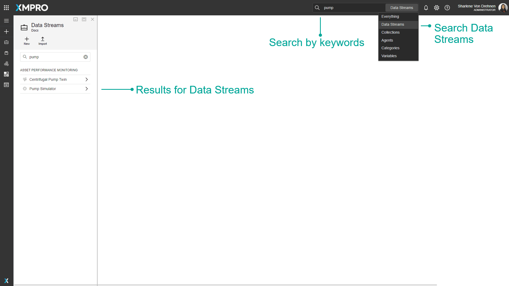
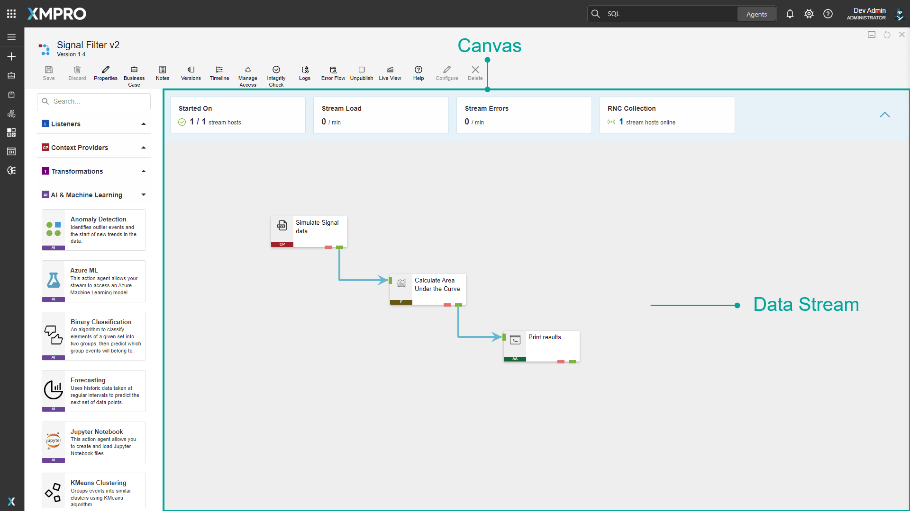
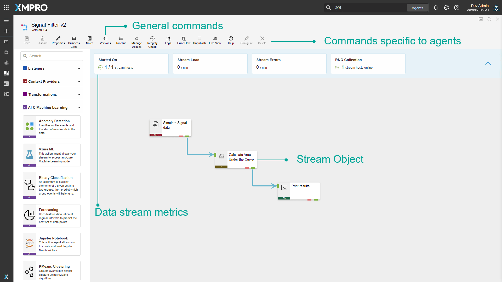
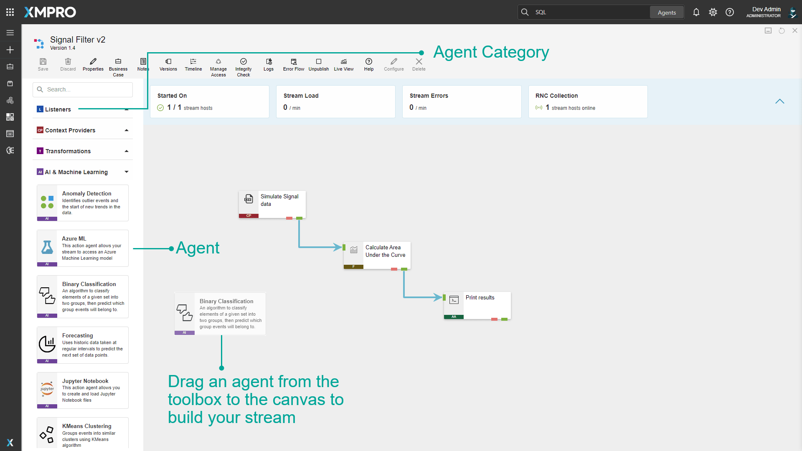

Data Stream
A Data Stream is a visual display of data flow, letting you integrate and connect various systems or data sources to view your information. This includes real-time data from machines, websites, or other streaming sources, as well as contextual data like an item's make or model.
The Data Stream Designer lets you see all connected data in one place and manipulate it in different ways, such as aggregating, filtering, displaying, or saving to another database. You can monitor data to spot critical events like machine failures, without needing coding skills.
Video Presentation Discussing Data Stream Designer
Data Stream's flow is represented by agents connected by arrows, enabling data processing at each agent based on its function, allowing you to view and perform actions on data from multiple sources in one place.
Note
We recommend reading this documentation in conjunction with the Agent article to enhance your understanding of data streams.
Finding Data Streams
Use the search bar to find specific Data Streams, and select from the dropdown menu to search either throughout Data Stream Designer or only for Data Streams.

Data Stream Type
The Type selected in the Properties affects your choice of how often and when polling-based Agents run.
Streaming (Default): This allows you to specify a Polling Interval in seconds on polling-based Agents in the Stream Object configuration. Polling starts immediately and continues indefinitely.
Recurring: This allows you to specify granular options to schedule polling-based Agents in the Stream Object configuration. Options allow you to control the start time, repetition interval, and end time or number of repetitions. There is also the option to repeat indefinitely.
Agent Event Queue Capacity
v4.4.17: Replaced 'Event Buffer' for clarity in understanding how many events are buffered.
The Data Stream includes an advanced option to manage high event volumes, or complex stream configurations. The Agent Event Queue Capacity property allows for a higher number of events to be queued for each Stream Object within the Data Stream reducing the risk of event loss. By default, the Agent Event Queue Capacity is set to 128 events per Stream Object.
Warning
Increasing the Agent Event Queue Capacity may result in the Stream Host consuming more memory.
The Canvas
Data streams are crafted in an interactive canvas, allowing you to drag agents from the toolbox to the drawing area. In the same environment, configure agent settings, manage versions, define business cases, and more.
Stream Objects on the canvas can be duplicated or deleted, and for easy identification and access, they're marked with a unique color and abbreviation.


The Toolbox
The toolbox is a component in the Data Stream Designer that allows you to choose an Agent from a library of Agents that have been uploaded to the system and drag the agent from the toolbox to the Canvas when building a stream. All agents in the toolbox will always be the latest version and will all be available for all users, regardless of their role, unless a user does not have permission to view any of the Agents.
Agents are grouped by category in the toolbox. To expand a category, click on the arrow next to the category name. Please note that if no agents in a particular category are uploaded, the entire category will be hidden. Thus, if you are missing some of the categories in the toolbox, it is likely that there aren't any Agents uploaded belonging to that category.

Building a stream
Note
See the Manage Data Streams article for detailed instructions and an example of how to build your first stream.
Actions on the Data Stream
| Action | Description |
|---|---|
| Save | Saves any changes made to the Data Stream up to this point. |
| Discard | Discards any changes made to the Data Stream up to this point. |
| Properties | Opens the properties for the Data Stream. Also allows you to Delete the Data Stream. |
| Business Case | Opens the Business Case for the Data Stream. |
| Notes | Opens the Notes, which allows you to add notes about the Application for collaboration and future-proofing. |
| Versions | Versioning for the Data Stream. |
| Timeline | Opens the Timeline, which shows a timeline of the history of the Data Stream. |
| Manage Access | Allows you to manage which users are allowed to view or modify this Data Stream. |
| Integrity Check | Verifies if the agents in your stream are configured correctly. |
| Logs | Allows you to check for log messages for the Stream Host being used to run the Data Stream. |
| Error Flow | Toggles between being able to view and configure the default error Agent for the Stream, which collects all the errors from all agents with an Error endpoint. |
| Publish/Unpublish | Publishes or unpublishes the Recommendation, which makes it start listening for data from the Data Stream. |
| Configure (Agent) | Opens the configuration page for the selected Stream Object. |
| Upgrade (Agent) | Upgrades the selected Stream Object to the latest Agent Version. Only available if the selected Stream Object's Agent is not the latest version. |
| Delete (Agent) | Deletes the selected Stream Object from the canvas and Data Stream. |
| Help (Agent) | Opens the help page for the selected Stream Object's Agent. |
| Delete | Deletes the Data Stream. |
| Export | Export the Data Stream as an encrypted file. |
| Clone | Clones the Data Stream as a new Data Stream. |
Further Reading
- How to Create and Manage Data Streams
- How to Manage Recurrent Data Streams
- How to Troubleshoot a Data Stream
Last modified: August 20, 2025